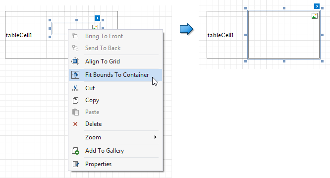

Add Report Controls to Containers
The Panel control allows you to place various report controls on it to combine them into a group.
You can use this panel to move, copy, change appearance settings, etc. instead of adjusting individual controls.
A table cell can also act as a container for other controls.
Both panel and table cells cannot contain the following report controls:
If a panel or table cell includes only one control, you can use the Fit Bounds to Container command in the context menu to position the control within the container. This command resizes the control so that it occupies all the available space (except borders).
